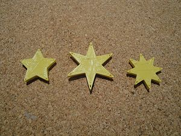
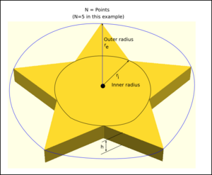
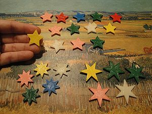
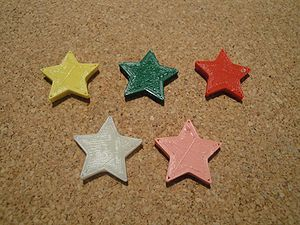
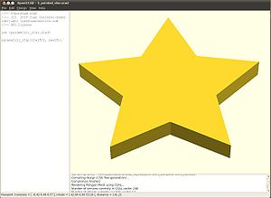
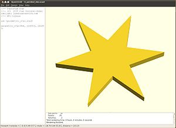

Tres estrellas amarillas de 5, 6 y 7 puntas (click para ampliar)
Contenido
[ocultar]Introducción


Parámetros de la extrella: re, ri, N y h (click para ampliar)
Estrella paramerizada diseñada en OpenScad. Los parámetros son:
- re: Radio exterior. Circunferencia donde se sitúan las puntas
- ri: Radio interior. Circunferencia donde se sitúan los puntos interiores
- N: Número de puntas de la estrella (N>=3)
- h: Grosor
Con solo estos parámetros se puede obtener cualquier de estrella de N puntas, con cualquier tamaño y diferentes aspectos. Se han creado 3 estrellas de ejemplo: de 5, 6 y 8 puntas.
Información
| Dimensiones | Parametrizadas. El radio exterior (re) determina su diámetro máximo |
| Material | ABS (Acrilonitrilo Butadieno Estireno) Es el mismo plástico de las piezas de Lego |
| Tiempo de impresión | Depende del tamaño de la estrella |
Descarga
Versión 1.0
| OpenScad | STL | GCODE | Descripción |
|---|---|---|---|
| parametric_star.scad | --- | --- | Fichero fuente en OpenScad con el modelo paramétrico |
| 5_pointed_star.scad | 5-pointed-star.stl | 5-pointed-star-v1.0.gcode | Estrella de 5 puntas, con parámetros: N=6, |
| 6_pointed_star.scad | 6_pointed_star.stl | 6_pointed_star-v1_0.gcode | Estrella de 6 puntas, con parámetros: N=5, |
| 8_pointed_star.scad | 8_pointed_star.stl | 8_pointed_star_v1_0.gcode | Estrella de 8 puntas, con parámetros: N=8, |
- Versión inicial
- Diseñada con OpenScad
- Gcode generado con:
- Replicatorg 0020 (perfil cupcake mk5 abs, skeinforge 006)
- Replicatorg 0022 (perfil SF31-cupcake-acrylic-platform-ABS (modificado), skeinforge 031)
Fotos
|  Diferentes estrellas de colores (click para ampliar) |
 Estrellas de 5 puntas de colores (click para ampliar) |


|  Estrella de 5 puntas en OpenScad (click para ampliar) |
 Estrella de 6 puntas en OpenScad (click para ampliar) |


Repositorio
- Repositorio SVN: http://svn.iearobotics.com/3D_objects/parametric_star/
Para obtener la última versión teclear:
svn co http://svn.iearobotics.com/3D_objects/parametric_star/v1.0/
Enlaces
Autor
Licencia
| |
Noticias
- 05/Dic/2010: Comenzada esta página